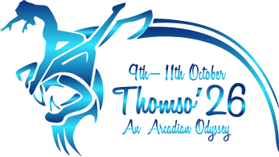

Concerts, competitions, workshops and open stages running from morning to late night across the campus.
Music, dance, theatre, fine arts, quizzing, sports and technical contests — enter solo or with a team.
A single festival pass covers all three days and every event. Campus accommodation can be added on.
Three nights. Zero sleep. Chart-topping headliners, a wall of light and low-end, and thirty thousand voices under one open Roorkee sky.
That’s the whole descent — you scrolled all the way through. There is nothing below this card except the fest itself.